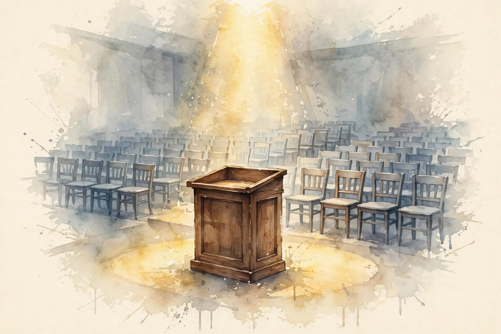

Companion · narrated from the lesson document
Two guest lectures with no inspected artifacts, and a capstone defense built on evidence. This companion walks the final unit: the honesty protocol for uninspected sources, the guest record, session reconciliation, the capstone LM, ablation matrices, failure diaries, resource ledgers, replication protocols, scale limits, deployment bridges, and the oral mechanism defense.
From the lesson The idea, and every number beside it, comes from the cited section of u18_guests_defense.md. The phrasing is the companion's.
Illustration Invented by the companion: an analogy, a toy with made-up values, or a what-if. Never lecture content.
companion Companion voice: the idea above the tag is from the lesson. The generalization below it is the companion's.
Provenance: no full lecture transcript exists for this session. The page narrates the lesson document content/v2/cs336/lessons/u18_guests_defense.md, not a video. Claim class: REQUESTED-BRANCH. Standing note: guest artifacts inspected: 0. No artifacts were inspected for G1 or G2, and their content is unknown. See source_gaps.md G-08. Every number carries the lesson section that reports it.
Section 1 · Remediation
From the lessonRemediation
An uninspected source is not a covered source. The protocol: name the source, state what is known (title/date/speaker from the secondary schedule), state what is unknown (everything else), and never fill the gap from the speaker's reputation. The lesson's toy from compute_u18.py: guest artifacts inspected: 0. Three sentences, and this whole unit obeys them. The gap stays open until artifacts appear.
An uninspected source is not a covered source. Name it, bound it, never fill it.
Section 2 · C01
From the lessonC01 §2, §6
What are the two guest lectures? Reported (secondary schedule, not official): G1 Jun 1, Daniel Selsam. G2 Jun 3, Dan Fu. Titles, slides, recordings: unknown. The schedule is a pointer, not a source. The pointer says when and who. It says nothing about what was taught. Session check from compute_u18.py: 17 core + 2 guest = 19. Both guests appear exactly once. The names above are reported facts from the secondary schedule. Everything about content is unknown, and this companion will not infer it.
The schedule is a pointer, not a source. It says when and who, nothing about what.
Section 3 · C02, C03
From the lessonC02 §2, §5, §6
How would you actually get the guest material? Channels: the course site, the lecture repository, the speaker's page, archived schedules. "Obtained" means bytes on disk with a recorded inspection extent, not a remembered title. Retrieval is evidence collection. Each channel either yields an artifact (record its extent) or it does not (record the attempt and the date). The lesson's toy log: course site (2026-10-06, no guest page), lecture repo (2026-10-06, no guest files), speaker page (2026-10-06, no slides). Three attempts, zero artifacts: the honest state. The failure case: a paywalled recording appears. Access without rights is forbidden. The assumption "public means accessible" breaks. Record the barrier.
From the lessonC03 §2, §5, §6
The speaker is famous for X. Did the lecture cover X? Unknown. Speakers surprise: the rule forbids filling the gap from reputation, publication lists, or "what they usually talk about". The name is not the content. Inference from the name is a prior with no likelihood: it never updates, so it never becomes knowledge. Every content sentence needs an artifact anchor or it is deleted. The lesson's counterexample: a systems researcher gives a guest lecture on evaluation methodology. The reputation-based guess ("it was about systems") is wrong, and wrong confidently. The failure case: labeled speculation drifts into the notes as fact over time. The assumption that labels persist breaks. Re-lint on every edit.
The name is not the content. Thin and honest beats thick and invented.
Section 4 · C04
From the lessonC04 §2, §5, §6
Is every session taught somewhere? Reconciliation is record-keeping: every session has exactly one home (or a documented split), every unit lists its sessions. The auditor's first check. Count sessions per unit, sum, compare to 19, list exceptions. The lesson's run from compute_u18.py, executed 2026-10-06: 17 + 2 = 19. The only documented double-mapping is the S07 pipeline split. The failure case: a session hides inside another unit's lesson without a map entry. The count is right, the mapping is wrong. The assumption that the count suffices breaks. Check the mapping too.
visuals/compute_u18.py (executed 2026-10-06).Section 5 · C05
From the lessonC05 §2, §5, §6
What does the learner hand in? A trained tiny LM plus: the data manifest (U13-C12), the training config, the eval report (U12), the ablation matrix (C06), the failure diary (C07), and the resource ledger (C08). The model is the least important part. The evidence around it is the defense. Anyone can train. The defense proves understanding. Every item has a location and a verification. The lesson's toy checklist: 12 items, each with a path. The capstone in ../capstones/ follows this list. The evidence costs more effort than the training. That is the point. The failure case: the model trains but the manifest is absent. The result is irreproducible and the defense fails. The assumption "the model is enough" breaks.
The model is the least important part. The evidence around it is the defense.
Section 6 · C06, C07
From the lessonC06 §2, §5, §6
4 build choices: which design? The design trades runs against interaction visibility. Factorial sees everything. OAT sees main effects only. Fractional sees main effects plus some interactions by aliasing. Full: 2^4 = 16. Half-fraction: 2^{4-1} = 8. OAT: 1 + 4 = 5. The lesson's run, executed 2026-10-06: 16, 8, 5. OAT is cheapest and blind to interactions. Runs are the currency. Interactions are the information. The failure case: the key interaction is aliased with a main effect in the fractional design. The conclusion is wrong. The assumption "aliasing is safe" breaks. Choose the fraction to protect suspected interactions.
From the lessonC07 §2, §5, §6
The run failed three times before it worked. Where is that recorded? The failure diary: date, symptom, hypothesis, fix, lesson. The course errors.md is this unit's diary. Failures are data. The diary turns a raw failure note into a full record: how it broke, the fix applied, and the lesson learned. The defense reads the diary to judge the builder's honesty. Write the entry when the failure happens. The lesson's toy entry: 2026-10-06, NaN loss, hypothesis LR too high, fix LR/10, lesson: check loss after 10 steps. Writing takes minutes. Reconstructing from memory takes hours and lies. The failure case: the diary blames the tools for every failure. It becomes fiction. The assumption "entries are honest" breaks. Review the diary with a peer.
visuals/compute_u18.py (executed 2026-10-06).From the lessonC06 §5 Design toy. Full = 2^n, half-fraction = 2^{n-1}, OAT = 1 + n.
Choices n
Press the button.
At the default: 16, 8, 5, matching C06 §6.
Failures are data. Write the entry when it happens: reconstructing from memory lies.
Section 7 · C08, C09
From the lessonC08 §2, §5, §6
What did the project cost? The ledger is the project's receipt: compute, storage, failures, all counted. "How much did it cost" is a defense question with a numeric answer. Total = sum over runs of (hours x rate) + storage. Failed runs count: they consumed real resources. The lesson's run, executed 2026-10-06: 480 GPU-hours at a toy $2.50 = $1,200 compute. 1,200 GB storage. 3 failed runs at 40 GPU-hours each included in the total. Tracking costs attention. Not tracking costs the ability to plan the next project. The failure case: failed runs are omitted. The ledger understates by 25 percent on the toy. The assumption "only successes count" breaks. Count everything.
From the lessonC09 §2, §5, §6
A peer reruns your pipeline. When do they confirm you? Replication is not repetition of the exact bits. It lands inside the bands with an independent run. The bands come from the seed variation (U12-C09), not from optimism. Bands = target plus or minus k*SE from the seed study. k=2 is the common choice. The lesson's run, executed 2026-10-06: val loss 2.10 plus or minus 0.05, perplexity 8.17 plus or minus 0.40, accuracy 0.72 plus or minus 0.03. Inside all three: replicated. The seed study costs runs. The protocol document costs writing. The failure case: the protocol omits the data manifest. The peer trains on different data and "fails to replicate" a correct result. The assumption "the protocol is complete" breaks. Include the manifest (U13-C12).
visuals/compute_u18.py (executed 2026-10-06).From the lessonC08 §5 Ledger toy. Cost = GPU-hours × rate.
GPU-hours Rate ($/hr)
Press the button.
At the defaults: $1,200, matching C08 §6.
Failed runs count. The ledger understates by 25 percent on the toy when they are omitted.
Section 8 · C10, C11
From the lessonC10 §2, §5, §6
The tiny LM works. Does the recipe scale to 70B? Unknown from this evidence: the toy ran on CPU with synthetic data. The honest statement names the gaps: no distributed run, no real data at scale, no long-context test. Every result carries its scale label. The defense states the label and refuses to extrapolate past it without staged evidence (U10-C12). The lesson's toy: run at 1M params, claim boundary at 1M params. The 70B claim is marked as lacking evidence. Honesty costs impressive-sounding claims. It buys credibility. The failure case: the boundary is stated once and forgotten. Later slides claim more. The assumption "the boundary persists" breaks. Repeat it per claim.
From the lessonC11 §2, §5, §6
The model passes the held-out gate (U16-C12). How does it reach users safely? Gates: canary on 1 percent traffic, metric comparison against the incumbent, automatic rollback on regression. Deployment is a controlled experiment, not a launch event. The rollback plan is written before the deploy, not during the incident. Each trigger has a metric, a threshold, and an owner. The lesson's toy: canary 1 percent for 24h, rollback if error rate rises 0.5 points or latency p99 rises 20 percent. Canaries cost engineering and time. Incidents cost more. The failure case: the rollback itself is broken (old artifact deleted). The incident becomes an outage. The assumption "rollback works" breaks. Drill it.
Every result carries its scale label. The 70B claim from a 1M-param run is marked as lacking evidence.
Section 9 · C12
From the lessonC12 §2, §5, §6
The examiner points at your pipeline and asks "why this, not that?" The defense ladder: define, toy, derive, implement, compare, debug, critique, design. The defense tests ownership: can you derive it, break it, and rebuild it? Memorized words fail at step 3. Understanding survives to step 8. Preparation is the course itself, done honestly. The lesson's toy rubric from compute_u18.py: mechanism 30, evidence 25, limits 20, transfer 15, clarity 10. A defense scoring 85/100 loses most points on limits (step 7): the classic profile. Preparation costs the whole course. There is no shortcut step. The failure case: the defender memorizes the lesson text. Step 6 (debug the broken case) exposes it. The assumption "fluency is comprehension" breaks under changed constraints.
visuals/compute_u18.py (executed 2026-10-06).
Memorized words fail at step 3. Understanding survives to step 8.
Section 10 · Synthesis
From the lesson The arc, end to end, and of the whole course. An uninspected source is not a covered source (remediation). The guest record: G1 Jun 1, Daniel Selsam. G2 Jun 3, Dan Fu. Content unknown (C01). Retrieval is evidence collection. The name is not the content (C02, C03). 17 + 2 = 19 sessions, reconciled (C04). The capstone is evidence around a tiny LM (C05). Factorial sees everything. OAT is blind to interactions (C06). Failures are data. Write them down (C07). The ledger counts everything, failures included (C08). Replication lands inside the bands (C09). Every result carries its scale label (C10). Deployment is a controlled experiment with a rollback plan (C11). The defense ladder runs eight steps. Memorized words fail at step 3 (C12).
From the lesson Where the course points next, in the lesson's own forward links: U12 supplies the eval discipline behind the replication bands. U13 supplies the data manifest behind reproducibility. U14 supplies the ablation discipline. U10 supplies the scale-transfer discipline. U16 supplies the held-out gate. U11 supplies the deployment stack. This companion series ends where the course does: with the defense.
Wisdom index
Each nugget states the idea in plain words, why it matters, and the transferable principle. Every one is anchored to its lesson section.